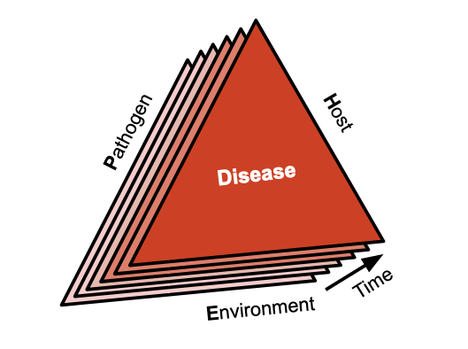

1 Introduction
1.1 Defining plant disease
Disease in plants can be defined as any malfunctioning of host cells and tissues that results from continuous irritation by a pathogenic agent or environmental factor and leads to development of symptoms (Agrios 2005a). When caused by pathogenic agent, the disease results from the combination of three elements: susceptible host plant, a virulent pathogen, and favorable environmental conditions - the famous disease triangle. When a pathogen population establishes and causes disease in a host population, the phenomenon is called an epidemic, or the disease in populations. Among several definitions of epidemic, a comprehensive one is the change in disease intensity in a host population over time and space (Madden et al. 2017).
There exist numerous iterations of the disease triangle, incorporating additional elements (e.g., human intervention and time) as points and/or dimensions to provide a more comprehensive representation of an epidemic (Agrios 2005b). We find the disease prism particularly illustrative, where a sequence of stacked triangles represent the evolution of a plant disease through time (Francl 2001).

1.2 Importance of epidemics
Epidemics bear significant economic importance due to their potential to decrease crop yields, diminish product quality, and escalate control costs, contingent on their intensity level. Numerous historical examples of widespread epidemics, reaching pandemic levels and resulting in catastrophic effects on crops, have been documented (Agrios 2005b). The Irish potato famine of 1845–1847, caused by the late blight pathogen (Phytophthora infestans), is a famous example of a well-documented pandemic. This disease notably altered the course of history in Europe and the United States, and was pivotal in the evolution of the science of plant pathology. During the 1840s, the pathogen ravaged potato crops, which were a dietary staple for the Irish. The disease outbreak was triggered by the introduction of a novel, virulent pathogen population that found suitable environmental conditions (cool and wet weather) for infection and development within a dense population of susceptible hosts.
However, there are several reasons why devastating epidemics may continue to unfold. Recent history has seen severe epidemics reaching pandemic levels due to the incursion of pathogens into regions where they had previously been absent (refer to Box 1). Alternatively, new pathogenic strains might emerge as a result of factors driving genetic diversity within the local pathogen population. A case in point is the Ug99 strain of the wheat stem rust, which poses a significant threat to global wheat production. First identified in Uganda in 1998, an asexual lineage has propagated through Africa and the Middle East, causing catastrophic epidemics. Research suggests that Ug99 emerged via somatic hybridization and nuclear exchange between isolates from different lineages (Li et al. 2019). Finally, disease emergence or re-emergence can be influenced by shifts in climatic patterns. For instance, the Fusarium head blight of wheat caused by the fungus Fusarium graminearum. In Southern Brazil, the increased frequency of severe epidemics resulting in greater yield loss since the early 1990s has been linked to alterations in rainfall patterns across decades (Duffeck et al. 2020).
In Brazil, the soybean rust pathogen (Phakopsora pachyrhizi) first reached southern Brazil in 2002 (Yorinori et al. 2005). The disease spread to all production regions of the country in the following few years, severely reducing yields. To overcome the problem, farmers have relied on massive applications of fungicides on soybeans, which dramatically increased the production costs with the need for sequential fungicide sprays to combat the disease. Total economic loss have been estimated at around US$ 2 billion yearly (Godoy et al. 2016). More recently, wheat blast, a disease that originated in the south of Brazil in 1984, and have been restricted to South America, was firstly spotted in South Asia, Bangladesh, in 2016. Blast epidemics in that occasion devastated more than 15,000 ha of wheat and reduced yield of wheat in the affected field up to 100% (Malaker et al. 2016; Islam et al. 2019). The disease was later found in Zambia, thus also becoming a threat to wheat production in Africa (Tembo et al. 2020). In Brazil, the wheat blast disease is a current threat to expansion of wheat cultivation in the tropics(Cruz and Valent 2017).
1.3 History of Epidemiology
Botanical epidemiology, or the study of plant disease epidemics, is a discipline with roots tracing back to the early 1960s. However, its origins can be linked to events from centuries and decades prior. For instance, in 1728, Duhamel de Monceau presented the earliest known epidemiological work on a disease, referred to as ‘Death,’ that afflicted saffron crocus (Rhizoctonia violacea). Fast forward to 1858, a textbook detailing plant diseases, written by Julius Kuhn, made its debut, introducing the concept of an epidemic as illustrated by the Irish late blight epidemics of 1845-46. Subsequently, in 1901, H.M. Ward adopted an ecological perspective to the study of plant diseases in his seminal book, Disease in Plants. By 1946, Gäumann penned the first book exclusively devoted to plant disease epidemiology.
Further evolution of this field was marked by the publication of a chapter titled “Analysis of Epidemics” by J.E. Vanderplank in Plant Pathology, vol. 3, edited by Horsfall and Dimond, in 1960. Vanderplank elaborated on his pioneering ideas in his 1963 book, “Plant Diseases: Epidemics and Control”(Vanderplank 1963). He is universally recognized as the foundational figure of plant disease epidemiology (Zadoks and Schein 1988; Thresh 1998), his landmark book being the first to comprehensively describe and quantify plant disease epidemics, and offering a theoretical framework for epidemic analysis.
In the same year, the first International Epidemiology Workshop was convened in Pau, France. This event constitutes an important milestone in the historical narrative, significantly contributing to the molding of this emergent discipline.
The International Epidemiology Workshop (IEW) is the principal working group of plant disease epidemiology. This is an organization with a rich history whose members have met approximately every 5 years since 1963. Thus far, 13 meetings have been organized/planned:
1963 - Pau, France
1971 - Wageningen, The Netherlands
1979 - Penn State, United States
1983 - NC State, Raleigh, United States
1986 - Jerusalem, Israel
1990 - Giessen, Germany
1994 - Papendal, The Netherlands
2001 - Ouro Preto, Brazil
2005 - Landerneau, France
2009 - Cornell, Geneva, United States
2013 - Beijing, China
2018 - Lillehammer, Norway
2024 - Iguassu Falls, Brazil
1.4 Other resources
1.4.1 Books
2006 - The Epidemiology of Plant Diseases
2007 - The Study of Plant Disease Epidemics
2017 - Exercises in Plant Disease Epidemiology
2017 - Application of Information Theory to Epidemiology
2020 - Emerging Plant Diseases and Global Security
1.4.2 Online tutorials
Ecology and Epidemiology in R
Plant Disease Epidemiology - Temporal aspects
Simulation Modeling in Plant Disease Epidemiology and Crop Loss Analysis
1.4.3 Software
Epicrop - Simulation Modeling of Crop Diseases using a SEIR model